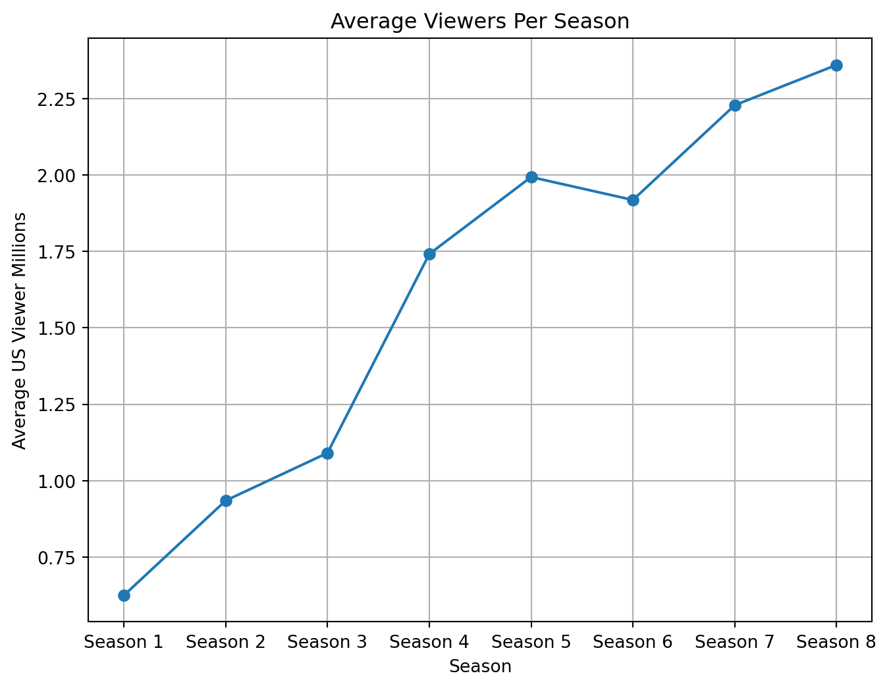
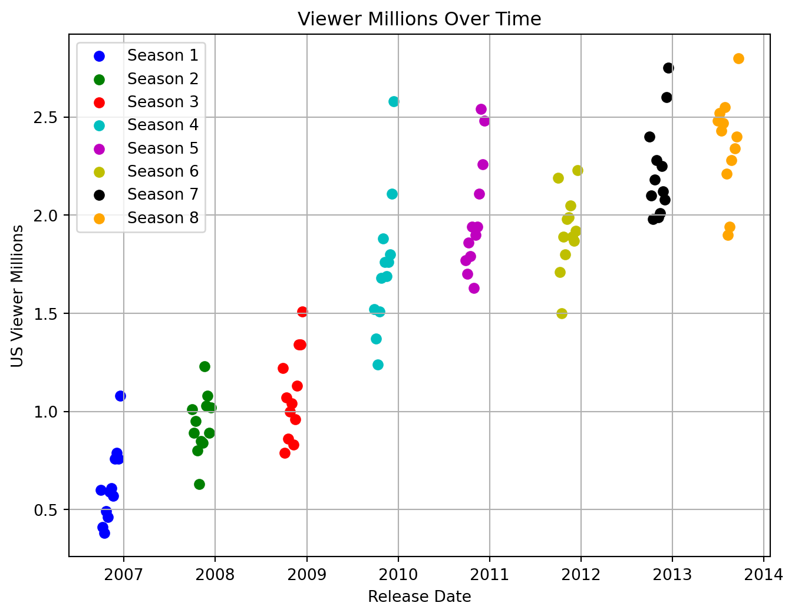

import matplotlib.pyplot as plt
import pandas as pd
# Data
data = {
"Episode": list(range(1, 97)),
"Title": ["Dexter"] * 96,
"Date": ["October 1, 2006", "October 8, 2006", "October 15, 2006", "October 22, 2006", "October 29, 2006",
"November 5, 2006", "November 12, 2006", "November 19, 2006", "November 26, 2006", "December 3, 2006",
"December 10, 2006", "December 17, 2006", "September 30, 2007", "October 7, 2007", "October 14, 2007",
"October 21, 2007", "October 28, 2007", "November 4, 2007", "November 11, 2007", "November 18, 2007",
"November 25, 2007", "December 2, 2007", "December 9, 2007", "December 16, 2007", "September 28, 2008",
"October 5, 2008", "October 12, 2008", "October 19, 2008", "October 26, 2008", "November 2, 2008",
"November 9, 2008", "November 16, 2008", "November 23, 2008", "November 30, 2008", "December 7, 2008",
"December 14, 2008", "September 27, 2009", "October 4, 2009", "October 11, 2009", "October 18, 2009",
"October 25, 2009", "November 1, 2009", "November 8, 2009", "November 15, 2009", "November 22, 2009",
"November 29, 2009", "December 6, 2009", "December 13, 2009", "September 26, 2010", "October 3, 2010",
"October 10, 2010", "October 17, 2010", "October 24, 2010", "October 31, 2010", "November 7, 2010",
"November 14, 2010", "November 21, 2010", "November 28, 2010", "December 5, 2010", "December 12, 2010",
"October 2, 2011", "October 9, 2011", "October 16, 2011", "October 23, 2011", "October 30, 2011",
"November 6, 2011", "November 13, 2011", "November 20, 2011", "November 27, 2011", "December 4, 2011",
"December 11, 2011", "December 18, 2011", "September 30, 2012", "October 7, 2012", "October 14, 2012",
"October 21, 2012", "October 28, 2012", "November 4, 2012", "November 11, 2012", "November 18, 2012",
"November 25, 2012", "December 2, 2012", "December 9, 2012", "December 16, 2012", "June 30, 2013",
"July 7, 2013", "July 14, 2013", "July 21, 2013", "July 28, 2013", "August 4, 2013", "August 11, 2013",
"August 18, 2013", "August 25, 2013", "September 8, 2013", "September 15, 2013", "September 22, 2013"],
"US Viewer Millions": [
0.6, 0.41, 0.38, 0.49, 0.46, 0.59, 0.61, 0.57, 0.76, 0.79, 0.76, 1.08, 1.01, 0.89, 0.95, 0.8, 0.63, 0.85, 0.84,
1.23, 1.03, 1.08, 0.89, 1.02, 1.22, 0.79, 1.07, 0.86, 1, 1.04, 0.83, 0.96, 1.13, 1.34, 1.34, 1.51, 1.52, 1.37,
1.24, 1.51, 1.68, 1.88, 1.76, 1.69, 1.76, 1.8, 2.11, 2.58, 1.77, 1.7, 1.86, 1.79, 1.94, 1.63, 1.9, 1.94, 2.11,
2.54, 2.26, 2.48, 2.19, 1.71, 1.5, 1.89, 1.8, 1.98, 1.99, 2.05, 1.89, 1.87, 1.92, 2.23, 2.4, 2.1, 1.98, 2.18,
2.28, 1.99, 2.01, 2.25, 2.12, 2.08, 2.6, 2.75, 2.48, 2.52, 2.43, 2.47, 2.55, 2.21, 1.9, 1.94, 2.28, 2.34, 2.4, 2.8
]
}
# Create DataFrame
df = pd.DataFrame(data)
# Convert 'Date' column to datetime
df['Date'] = pd.to_datetime(df['Date'])
# Calculate average viewers for each season
average_viewers = []
for i in range(0, len(df), 12):
season_average = df['US Viewer Millions'].iloc[i:i+12].mean()
average_viewers.append(season_average)
season_labels = ['Season 1', 'Season 2', 'Season 3', 'Season 4', 'Season 5', 'Season 6', 'Season 7', 'Season 8'] # Season labelsDexter Report
Introduction:
Dexter is an American television drama that was broadcast on the premium cable channel Showtime from October 1, 2006, to September 22, 2013. A total of 96 episodes of Dexter were broadcast over eight seasons.
The series is based on characters created by Jeff Lindsay for his “Dexter” series of novels, and follows the life of Dexter Morgan (Michael C. Hall), a Miami Metro Police Department blood pattern analyst with a double life. While investigating murders in the homicide division, Dexter hunts and kills murderers and criminals who have escaped the justice system. Although the first season is based on the events of Darkly Dreaming Dexter, the series’ subsequent seasons do not follow the novels in the series. Departing from the narrative of Lindsay’s second Dexter novel Dearly Devoted Dexter, the show’s writer Daniel Cerone said that the writers “didn’t see the opportunity in the second book” to adapt it.
Poster:

Overall Average Viewership:
Over 8 million weekly viewers across all platforms for the entire series, including “Dexter: New Blood”. This makes it the most-watched series in Showtime’s history. Viewership grew steadily throughout the original series run. Season 1 averaged 0.63 million viewers, while Season 8 averaged 2.36 million viewers. The season 4 finale holds the record for the most-watched original series episode on Showtime at the time, with 2.6 million viewers. Despite being the most-watched series in Showtime history, “Dexter: New Blood” averaged a lower viewership of 0.59 million viewers per episode. However, its finale set a record for Showtime with 3 million viewers across all platforms, including 2 million via streaming and on-demand.
Viewership Over Time:
Generating data required fro the plot.
Beow graph shows average viewers over each season of the show.
# Plot
plt.figure(figsize=(8, 6))
plt.plot(range(1, len(average_viewers)+1), average_viewers, marker='o', linestyle='-')
plt.title('Average Viewers Per Season')
plt.xlabel('Season')
plt.ylabel('Average US Viewer Millions')
plt.xticks(range(1, len(average_viewers)+1), season_labels) # Set x-ticks as season labels
plt.grid(True) # Adding grid for better visualization
plt.show()
Popularity Per Episode:
This plot shows the viewership of the show over the years. With each season highlightes and each episode as a distinct point.
Code
plt.figure(figsize=(8, 6))
colors = ['b', 'g', 'r', 'c', 'm', 'y', 'k', 'orange'] # List of colors
season_labels = ['Season 1', 'Season 2', 'Season 3', 'Season 4', 'Season 5', 'Season 6', 'Season 7', 'Season 8'] # Season labels
for i in range(0, len(df), 12):
season_index = i // 12
color_index = season_index % len(colors) # Calculate the color index
plt.scatter(df['Date'].iloc[i:i+12], df['US Viewer Millions'].iloc[i:i+12], marker='o', color=colors[color_index], label=season_labels[season_index])
plt.title('Viewer Millions Over Time')
plt.xlabel('Release Date')
plt.ylabel('US Viewer Millions')
plt.grid(True) # Adding grid for better visualization
plt.legend()
plt.show()
Season Viewership Analysis:
The Dexter series has shown a remarkable trend in viewership over its eight-season run. The analysis below utilizes inline variables to summarize key insights from the viewership data.
Summary of Viewership Trends:
- Starting Strong: The series began with a solid viewership, with Season 1 averaging 0.62 million viewers.
- Peak Popularity: Dexter reached its peak popularity in Season 4, with an average of 1.74 million viewers.
- Consistent Growth: There was a consistent growth in viewership from Season 1 through Season 4.
- Sustaining Interest: While there were fluctuations, the series maintained a strong audience, with Season 8 averaging 2.36 million viewers.
- Series Finale: The series finale saw a significant spike in viewership, drawing 2.8 million viewers across all platforms.
Insights from the Data:
- The viewership data indicates that the series was able to capture and retain a large audience throughout its run.
- The increase in viewership over time suggests that the show grew in popularity as it progressed, likely due to word-of-mouth and increased marketing efforts.
- The drop in viewership for “Dexter: New Blood” could be attributed to various factors such as changes in viewing habits, competition from other shows, or the long gap between the original series and the revival.
Conclusion:
Dexter’s journey through the years has been a testament to its compelling storytelling and strong character development. The data reflects the show’s ability to engage viewers, making it a standout series in Showtime’s lineup.